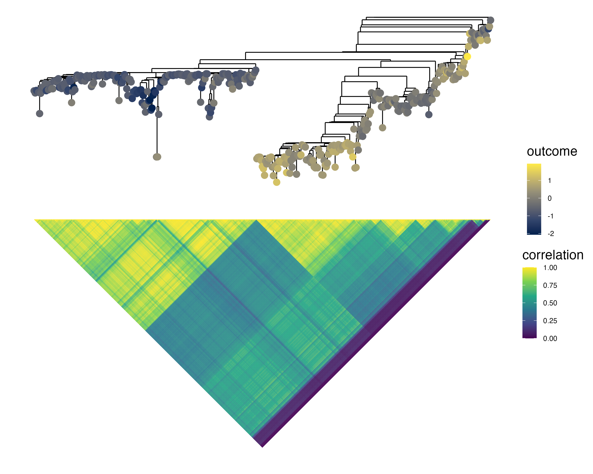
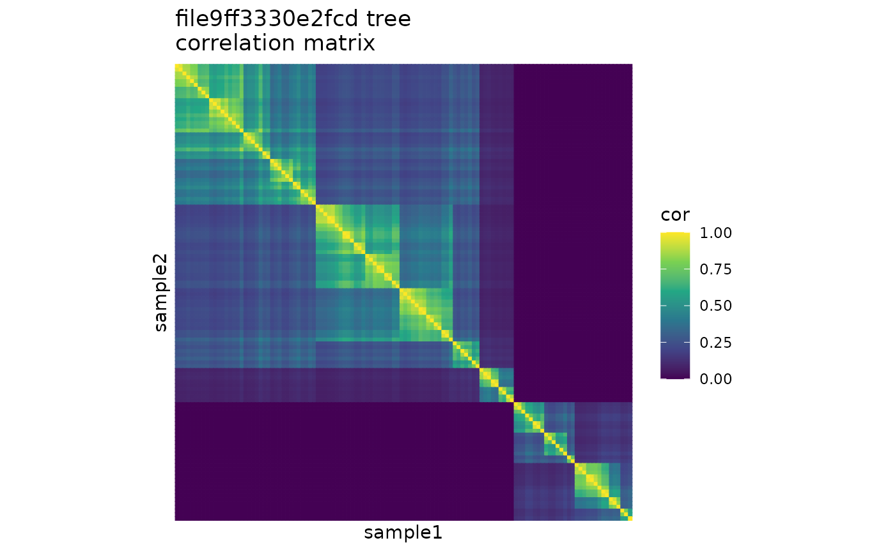
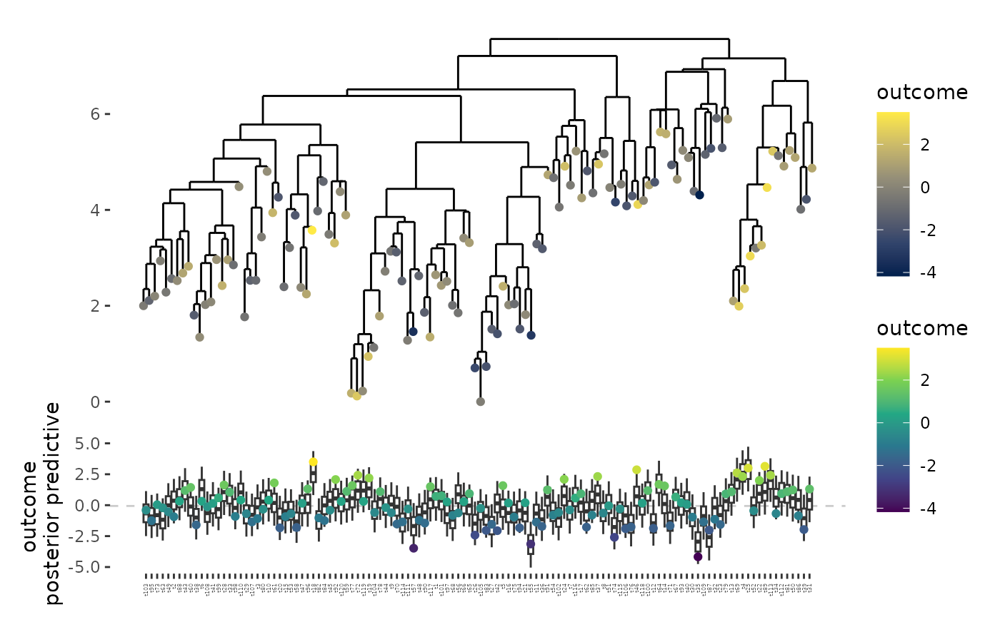

PGLMMs
2025-12-03
pglmm.RmdPGLMMs
Phylogenetic generalized linear mixed models (PGLMMs) are probabilistic models that account for phylogenetic structure. For a PGLMM with a linear regression as the base model, the model structure is as follows:
The outcome is modeled as a function of some familiar terms: covariates , coefficients , and residual noise . The key addition is the phylogenetic term , which contains a “random effect” for each observation in . Unlike typical random effects (which are usually independent between different levels of the random effect variable), the values in the phylogenetic term follow a pre-specified correlation structure , which is derived from a tree. The variability of the phylogenetic term is scaled by the “phylogenetic noise” parameter .
To understand how a tree implies a correlation structure, consider the plot below showing a phylogenetic tree and the lower triangle of the correlation matrix it implies. You can see that the clade on the left (with low inter-leaf distances between its members) forms a bright sub-block of high correlation in the matrix. The tiny clade on the far right has high inter-leaf distance between its members and the rest of the tree, so its members generally have low correlation with the rest of the leaves, exhibited by the dark band on the right of the triangle. Note that the matrix is derived solely from the structure of the tree (the black lines) – it is not influenced by the colored outcome dots. The correlation matrix numerically quantifies the “higher inter-leaf distance → lower correlation” principle.

We can see in the synthetic example above that the tree clearly does
impact the outcome: the two well-separated clades clearly show very
different outcome values. A PGLMM evaluated on this data would easily
detect such a blazing signal, so in the remainder of this section we’ll
simulate a tree with an outcome that’s realistically noisier and less
visually obvious. After that we’ll fit the PGLMM with
anpan_pglmm() then examine the results.
Some setup:
library(anpan)## • This is anpan version 0.3.0
## • Read the guide: Reinstall with `build_vignettes = TRUE`, then run
## anpan::anpan_vignette()
## • Get help: Visit the biobakery help forum at <https://forum.biobakery.org/>
## • Parallelize: Run `future::plan()` as appropriate for your system.
## • Activate progress bars: `library(progressr); handlers(global=TRUE)`##
## Attaching package: 'dplyr'
##
## The following objects are masked from 'package:data.table':
##
## between, first, last
##
## The following objects are masked from 'package:stats':
##
## filter, lag
##
## The following objects are masked from 'package:base':
##
## intersect, setdiff, setequal, union##
## Attaching package: 'ape'
##
## The following object is masked from 'package:dplyr':
##
## where
options(digits = 2)Simulate data
To demonstrate the PGLMM functionality, we’ll simulate a tree, a
single covariate x, and an outcome variable y.
We’ll use n = 120, sigma_phylo = 1 and
sigma_resid = 1.
The best way to understand a generative model is to use it to simulate data. If you feel like you don’t understand PGLMMs, step through these simulation blocks line by line (10 lines in total), look at the outputs, and make sure you understand what happens on that line. Try modifying it in different ways and see how the outputs and downstream inference change.
The code chunk below sets a randomization seed and the parameters we’ll use, then generates a random tree:
You can try plot(tr) if you want to take a quick look at
your tree, but we’ll examine it with some additional detail later.
The chunk below derives the correlation matrix implied by the tree:
cor_mat = ape::vcv.phylo(tr, corr = TRUE)
cor_mat[1:5,1:5]## t86 t39 t31 t112 t81
## t86 1.00 0.77 0.56 0.29 0.30
## t39 0.77 1.00 0.58 0.29 0.31
## t31 0.56 0.58 1.00 0.33 0.35
## t112 0.29 0.29 0.33 1.00 0.93
## t81 0.30 0.31 0.35 0.93 1.00The “t#” labels are the default sample IDs that
ape::rtree() puts as tip labels.
The chunk below generates a normally distributed covariate
covariate (which has no connection to phylogeny), the
linear effect of that covariate linear_term, the true
phylogenetic effects we’ll use, and the outcome variable
outcome, all stored in a tibble called
metadata. Note that the effect size of the covariate is
explicitly set to 1:
set.seed(42)
covariate = rnorm(n)
linear_term = 1 * covariate + rnorm(n, mean = 0, sd = sigma_resid)
true_phylo_effects = sigma_phylo * draw_mvnorm(Sigma = cor_mat)
metadata = tibble(sample_id = colnames(cor_mat),
covariate = covariate,
outcome = linear_term + true_phylo_effects)
metadata## # A tibble: 120 × 3
## sample_id covariate outcome
## <chr> <dbl> <dbl>
## 1 t86 1.37 -0.852
## 2 t39 -0.565 -1.97
## 3 t31 0.363 1.30
## 4 t112 0.633 0.933
## 5 t81 0.404 1.09
## 6 t50 -0.106 1.23
## 7 t113 1.51 2.42
## 8 t34 -0.0947 -0.676
## 9 t4 2.02 2.32
## 10 t13 -0.0627 1.08
## # ℹ 110 more rowsNow we have our tree and the metadata that goes along with it. A quick plot shows that the outcome correlates with the simulated covariate as desired:
ggplot(metadata, aes(covariate, outcome)) +
geom_point() +
labs(title = "The simulated covariate correlates with the outcome") +
theme_light()
We can use the function anpan::plot_outcome_tree() to
visually inspect the tree and confirm that it also appears related to
the outcome. The dot on each leaf is shaded according to the
outcome:
plot_outcome_tree(tr,
metadata,
covariates = NULL,
outcome = "outcome")## Warning: `aes_string()` was deprecated in ggplot2 3.0.0.
## ℹ Please use tidy evaluation idioms with `aes()`.
## ℹ See also `vignette("ggplot2-in-packages")` for more information.
## ℹ The deprecated feature was likely used in the anpan package.
## Please report the issue to the authors.
## This warning is displayed once every 8 hours.
## Call `lifecycle::last_lifecycle_warnings()` to see where this warning was
## generated.
You can sort of see by eye that the phylogeny correlates with the outcome. Some clades are generally brighter, and close neighbors usually have about the same shade of color.
How do we quantitatively assess the impact of the phylogeny on the outcome while also building in the relationship with the covariate? Use a PGLMM.
Exercise: Change the simulation to produce a binary outcome.
Hint: If you don’t want to define an inverse logit function, you can use
stats::plogis(). You may also want to use
rbinom() and start by first simulating a standard logistic
regression. The answer is given in the source Rmarkdown.
Fit the PGLMM
The code chunk below shows how to use anpan_pglmm() to
fit a PGLMM that examines this data for phylogenetic patterns while
adjusting for our covariate. It will take a couple minutes to run. By
default anpan_pglmm regularizes the noise ratio
sigma_phylo / sigma_resid with a Gamma(1,2) prior and runs
a leave-one-out model comparison against a “base” model that doesn’t
have the phylogenetic component. The default
family = "gaussian" argument means the residual error is
normally distributed. This can be changed to
family = "binomial" with a binary outcome to run a
phylogenetic logistic regression.
result = anpan_pglmm(meta_file = metadata,
tree_file = tr,
outcome = "outcome",
covariates = "covariate",
family = "gaussian",
bug_name = "sim_bug",
reg_noise = TRUE,
loo_comparison = TRUE,
run_diagnostics = FALSE,
refresh = 500,
show_plot_tree = FALSE,
show_post = FALSE)
Aside from fitting the model, this command prints a plot (and a lot of console output with messages about the progression of the MCMC sampler). This plots shows the correlation matrix implied by the tree. This is how the PGLMM sees the correlation structure of the leaves. (Side note: the randomized tree name shows up because we didn’t provide one explicitly and the function wasn’t able to pull one from the tree input either).
If you want to tl;dr the rest of the PGLMMs section, look at the model comparison result to decide if the phylogeny is informative beyond the base model:
result$loo$comparison## elpd_diff se_diff
## pglmm_fit 0.0 0.0
## base_fit -11.8 4.0Leave one out model comparison is NOT a null hypothesis significance test.
The PGLMM is the best fitting model, the difference in ELPD (predictive performance score) is relatively large (> -4), and the difference in ELPD for the base model is more than two standard errors below zero. So in this case you can say the phylogeny clearly contributes to the outcome. Given that we simulated the tree with , that is the correct conclusion.
If you want to see how the fit sees the effect of the tree, you can
examine the posterior distribution on the phylogenetic with a simple
interval plot laid out below the tree using
plot_tree_with_post() (or leave show_post at
its default TRUE value in the above call to
anpan_pglmm()):
p = plot_tree_with_post(tree_file = tr,
meta_file = metadata,
fit = result$pglmm_fit,
covariates = "covariate",
outcome = "outcome",
color_bars = TRUE,
labels = result$model_input$sample_id)## Make sure the label order matches the fit object! See ?plot_tree_with_post
p
You can see that the model fit confirms what we observed visually earlier: the phylogenetic effect generally shifts the outcome up in the bright clades and tightly correlated neighbors generally have very similar phylogenetic effects.
But how do we estimate clade effects? It’s important to contextualize the results in terms of the model formulation. A PGLMM doesn’t see the tree, it sees the correlation matrix . Human eyes can easily pick out blocks in the matrix as discrete clades, but the model sees only a single, constrained multivariate distribution. So a presentation like this where the phylogenetic effects are juxtaposed against the tree is a straightforward way to display of the fitted model, but can’t draw the sharp dividing lines we might want.
If you are able to justifiably define a clade manually (with some
articulable, non-circular reasoning beyond “this clade looks like it has
a higher outcome”), you can use the function
compute_clade_effects() to compare the average phylogenetic
effect of clade members against that of non-members. However automating
the selection of clades is non-trivial and beyond the scope of this
package, so we won’t be demonstrating that function here.
Exercise: Fit a PGLMM with a binary outcome. If you weren’t able to modify the simulation to generate binary outcomes in the previous exercise, just set the outcome to random draws of TRUE/FALSE (in which case you should observe zero phylogenetic signal). The answer is given in the source Rmarkdown.
Detailed interpretation
PGLMMs have a lot of moving parts. Let’s look at some of the results more closely.
Messages
A couple points to mention on the messages produced by
anpan_pglmm():
- There’s an important startup message that usually gets pushed off by later messages:
(1/3) Checking inputs.
Plotting correlation matrix...
Prior scale on covariate effects aren't specified. Setting to 1 standard deviation for each centered covariate. These values are:
linear_term prior_sd
<char> <num>
1: covariate 1.019
It would be better to set the beta_sd argument based on scientific background knowledge.This message is stating the empirical priors on the covariate
coefficients which anpan inferred from the data. It’s usually better to
set these yourself based on background information with the
beta_sd argument.
- There are messages from Stan about missing init values:
Init values were only set for a subset of parameters.
Missing init values for the following parameters:
- chain 1: beta, centered_cov_intercept, std_phylo_effects
- chain 2: beta, centered_cov_intercept, std_phylo_effects
- chain 3: beta, centered_cov_intercept, std_phylo_effects
- chain 4: beta, centered_cov_intercept, std_phylo_effectsThese are benign – the randomized initialization that Stan provides works fine for these parameters.
- There’s a fairly innocuous message from Stan that usually occurs at the start of the MCMC chains:
Chain 1 Informational Message: The current Metropolis proposal is about to be rejected because of the following issue:
Chain 1 Exception: normal_id_glm_lpdf: Scale vector is inf, but must be positive finite! (in '/var/folders/g8/22sdpptx451fng3nbj7c45vw0000gq/T/RtmpSaBGri/model-2e4326e878c5.stan', line 37, column 2 to column 62)
Chain 1 If this warning occurs sporadically, such as for highly constrained variable types like covariance matrices, then the sampler is fine,
Chain 1 but if this warning occurs often then your model may be either severely ill-conditioned or misspecified.This means that the noise parameter during one of the warmup
iterations escaped the weak prior and got set to a really large value
and the model didn’t like it. As the message states, this isn’t a
problem if it only occurs sporadically during the warmup iterations. You
can check the Stan outputs or set refresh = 1 to confirm
this, but I’ve personally never seen this message occur outside of
warmup.
Elements of the result value
result is a list with five elements:
-
model_input- the input metadata that made it into the analysis after taking the samples that overlapped with the leaves of the tree, re-ordered to the order of samples given in the correlation matrix. -
cor_mat- the correlation matrix derived from the tree -
pglmm_fit- a CmdStanMCMC object containing the PGLMM fit -
base_fit- another CmdStanMCMC object containing the “base” GLM fit (without the phylogenetic component) -
loo- a list containing four elements:-
pglmm_loo- a loo() result for the PGLMM model using integrated importance weights -
pglmm_ll_mat- a matrix giving the integrated log-likelihood importance weights with for posterior iterations (rows) of each leaf (columns) -
base_loo- a loo() result for the base model -
comparison- a loo_compare() result comparing the two models by leave-one-out predictive performance.
-
The pglmm_fit part of the result is the model fit
produced by cmdstanr for the PGLMM. Any method applicable
to CmdStanMCMC
objects works on this, but of particular interest is the
summary() method which we’ll use to inspect model fit.
Check diagnostics
If you run anpan_pglmm(run_diagnostics = TRUE), the
function will run the diagnostic checking functions for the MCMC and loo
results as applicable. In the example above, the output will look
something like this:
(4/4) Running diagnostics:
Processing csv files: /var/folders/g8/22sdpptx451fng3nbj7c45vw0000gq/T/RtmpZqhitZ/cont_pglmm_noise_reg-202211071429-1-59c385.csv, /var/folders/g8/22sdpptx451fng3nbj7c45vw0000gq/T/RtmpZqhitZ/cont_pglmm_noise_reg-202211071429-2-59c385.csv, /var/folders/g8/22sdpptx451fng3nbj7c45vw0000gq/T/RtmpZqhitZ/cont_pglmm_noise_reg-202211071429-3-59c385.csv, /var/folders/g8/22sdpptx451fng3nbj7c45vw0000gq/T/RtmpZqhitZ/cont_pglmm_noise_reg-202211071429-4-59c385.csv
Checking sampler transitions treedepth.
Treedepth satisfactory for all transitions.
Checking sampler transitions for divergences.
No divergent transitions found.
Checking E-BFMI - sampler transitions HMC potential energy.
E-BFMI satisfactory.
Effective sample size satisfactory.
Split R-hat values satisfactory all parameters.
Processing complete, no problems detected.
Pareto k diagnostic values:
Count Pct. Min. n_eff
(-Inf, 0.5] (good) 119 99.2% 720
(0.5, 0.7] (ok) 1 0.8% 1654
(0.7, 1] (bad) 0 0.0% <NA>
(1, Inf) (very bad) 0 0.0% <NA>
All Pareto k estimates are ok (k < 0.7).
Warning message:
Some Pareto k diagnostic values are slightly high. See help('pareto-k-diagnostic') for details.You can see that the MCMC diagnostics all came out well in this case.
You’ll get a link to the Stan warnings guide if
your sampler hits any issues. If you do get convergence issues, the two
simplest things to try first are usually setting
adapt_delta to a higher-than-default value (e.g. 0.95) and
increasing the number of iterations with
e.g. iter_warmup = 2000 and
iter_sampling = 2000. Another common issue is that if you
accidentally use family = "gaussian" where you meant
family = "binomial", you’ll get E-BFMI warnings.
In the example above we got one ok (but not good) Pareto k value,
which is more-or-less fine. Running more iterations with a higher
adapt_delta can sometimes help improve this, but for
anpan_pglmm() the occurrence of bad / very bad Pareto k
values are usually more indicative of a dataset problem than a model
problem. Low N, correlation matrices that are close to the identity,
and/or imbalanced binary outcomes can make it impossible to estimate
accurate loo results. The Cross-validation
FAQ has more information. The parameter of interest in a PGLMM is
really sigma_phylo anyway (see next section), so loo
results aren’t absolutely necessary to assess the impact of the
phylogeny on the outcome. If you aren’t interested in the model
comparison, you can just set loo_comparison = FALSE and
ignore the issue.
Inspect model fit
We’ll use the summary() method here to pull out the
posterior means for several parameters (black) and compare them to their
true values (red). These parameters include for the covariate effects
beta, the intercept, residual noise term
sigma_resid, the spread of phylogenetic effects
sigma_phylo and the per-leaf phylogenetic effects (which
are indexed in the same order as model_input):
post_summary = result$pglmm_fit$summary() |>
filter(grepl("beta|^intercept|sigma|^phylo_effect", variable)) |>
mutate(true_value = c(1,1,1, true_phylo_effects, 0))
post_summary[-c(4:113),] |>
ggplot(aes(mean, variable)) +
geom_point() +
geom_segment(aes(x = q5, xend = q95,
y = variable, yend = variable)) +
geom_point(aes(x = true_value),
color = 'firebrick1',
size = 3) +
labs(x = 'value',
y = 'parameter',
title = 'Posterior mean & 90% interval in black, true values in red') +
theme_light()
Most of the phylogenetic effects are cut from the plot for the sake of visibility. We can see that the posterior mean for beta[1] (the effect of the covariate) is fairly close to the true value (1), as are the intercept (0) and noise terms (1 and 1). Importantly, the 90% posterior intervals capture the true values.
Another thing to note on the above plot is the posterior interval of
sigma_phylo. This parameter is the estimated marginal
“spread” of leaf effects. It’s about 1, and clearly quite far from zero.
This means that leaf effects are allowed to be quite large, depending on
where a leaf is in the tree. If the sigma_phylo estimate is
near zero, that means leaf effects are all small, meaning the tree
structure doesn’t explain variation in the outcome well.
So we mostly recaptured our simulation parameters, but how well does
the model really fit the data overall? We can use
anpan::plot_tree_with_post_pred() to overlay the posterior
predictive distribution for each leaf and show that the predictive
distribution for each observation usually covers the true value:
anpan::plot_tree_with_post_pred(tree_file = tr,
meta_file = metadata,
covariates = "covariate",
outcome = "outcome",
fit = result$pglmm_fit,
labels = result$model_input$sample_id,
verbose = FALSE)
So when observations (the colored dots) are held out, the posterior predictive distribution for each leaf (the boxplots) generally capture the true value, showing that our model generally fits the data well.What about the posterior on the linear model component? We can
visualize that by taking some of the posterior draws (with
cmdstanr::draws()) of the line (the parameters
beta[1] and centered_cov_intercept) and
overlay those onto the outcome ~ covariate scatterplot. The
covariate is centered with scale(scale=FALSE) since that is
how the Stan model uses the data:
line_draws = result$pglmm_fit$draws(format = 'data.frame') |>
as_tibble() |>
select(beta = `beta[1]`, intercept = centered_cov_intercept) |>
slice_sample(n = 40)
result$model_input |>
ggplot(aes(scale(covariate, scale = FALSE), outcome)) +
geom_point() +
geom_abline(data = line_draws,
aes(slope = beta,
intercept = intercept),
alpha = .2) +
theme_light()
There’s a bit more uncertainty in the slope and intercept than you might expect given how visually clear the relationship is. This is because the model has to assess this relationship in the context of the very flexible phylogenetic component. If is high and the phylogenetic component if explaining most of the residual variation here, the linear component is free to relax toward the prior distribution. Vice versa if the phylogenetic component explains the variation poorly.
loo interpretation
Let’s look at the pglmm_loo result:
result$loo$pglmm_loo##
## Computed from 4000 by 120 log-likelihood matrix.
##
## Estimate SE
## elpd_loo -182.1 7.2
## p_loo 14.3 1.7
## looic 364.3 14.3
## ------
## MCSE of elpd_loo is 0.1.
## MCSE and ESS estimates assume MCMC draws (r_eff in [0.3, 1.6]).
##
## All Pareto k estimates are good (k < 0.7).
## See help('pareto-k-diagnostic') for details.PGLMM models are very flexible because they have a parameter for
every leaf. In some cases, this can cause the naive leave-one-out
importance weights calculated from raw log-likelihood values to be
unstable. anpan generates importance weights for each
observation by integrating the conditional likelihood for each
observation at each posterior iteration as described in section 3.6.1 of
@vehtari_glvm. This produces stable
importance weights that we can use for model comparison. Note that
unstable importance weights can still occur if the posterior on
phylogenetic effects are poorly constrained by the tree (i.e. the
correlation matrix is close to the identity matrix) and/or data (i.e. n
is low, typically <50 for continuous outcomes or <100 for binary
outcomes, though these cutoffs depend heavily on the tree as well).
The loo() result provides some diagnostics that can help
confirm that the importance weights are stable and we can trust the
downstream model comparison. In this case, we get a small number of
Pareto k diagnostic values that are only “okay”. If there are bad or
“very bad” k values, that indicates that individual observations are
having a strong effects on the model fit, and hence that the loo-based
model comparison shouldn’t be trusted. That scenario can happen more
frequently without regularization when
reg_noise = FALSE.
We only got a small number of non-good Pareto k value here (and none that were bad), so in this case the model comparison should be fine.
Let’s look at the model comparison:
result$loo$comparison## elpd_diff se_diff
## pglmm_fit 0.0 0.0
## base_fit -11.8 4.0The loo package prints model comparison objects by
placing the model with the best leave-one-out predictive performance on
the first row, in this case the PGLMM fit. The difference in expected
log pointwise predictive density (ELPD) compared to the other model is
shown in the first column along with a standard error of the difference
in the second column. Here the ELPD difference is about -11.8 with a SE
around +/- 4, which is both large and clearly non-zero. So here we would
conclude that the phylogenetic component of the PGLMM clearly fits
better than the base linear model. Given that we simulated the outcome
based on the tree with
,
that is the correct conclusion.
There’s a lot more to be said about loo model comparison that is beyond the scope of this vignette. You can read more interpretation of loo results on the Cross-validation FAQ written by the loo authors.